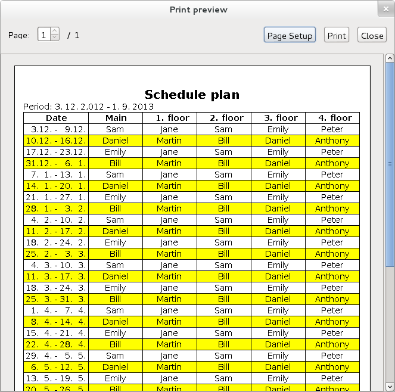

Popis programu:
jCleaningSchedule je program pro tisk a správu domovních plánu úklidu. Program generuje tisknutelnou tabulku, která obsahuje pro každý týden soupis osob, které by měli v daném týdnu vykovávat ve svém patře službu a také osobu, která by měla vykonává daný týden hlavní (společnou) službu.
Program umožňuje změnu vzhledu tabulky - lze změnit písmo, barvy tabulky a také rozložení jednotlivých sloupců (včetně jejich volby).
Hlavní vlastnosti:
- Tiskne tabulku pro plánování, kdo dělá daný týden co
- Umožňuje zvolit si požadované sloupce tabulky
- Dokáže se přizpůsobit přáním uživatele ohledně písma a barev tabulky a také požadavkům na velikost, orientaci a okraje stránky
- V tabulce se jednotlivé osoby střídají po týdnu
- Umí pracovat s patry od přízemí (0. patro) až do INT_MAX (2^31 - 1). patra
- Podporuje všechny dny jako první den týdne
Podporované jazyky:
Čeština, angličtina
Pomoc s překladem
Co to dělá:
Tiskne to tabulky jako tuto (GTK3 okno):

Minimální systémové požadavky:
- Java Runtime Environment (JRE) 1.7 nebo vyšší <http://www.java.com/>
- Tiskárna (doporučená)
Pokud naleznete chybu nebo najdete něco, jak udělat jCleaningSchedule lepší aplikací, budu rád, když mě kontaktujte.
Licence:
jCleaningSchedule - program for printing house cleaning schedules
Copyright (C) 2012 Martin Mareš
jCleaningSchedule is free software: you can redistribute it and/or modify
it under the terms of the GNU General Public License as published by
the Free Software Foundation, either version 3 of the License, or
(at your option) any later version.
jCleaningSchedule is distributed in the hope that it will be useful,
but WITHOUT ANY WARRANTY; without even the implied warranty of
MERCHANTABILITY or FITNESS FOR A PARTICULAR PURPOSE. See the
GNU General Public License for more details.
You should have received a copy of the GNU General Public License
along with jCleaningSchedule. If not, see http://www.gnu.org/licenses/.
Martin Mareš
mmrmartin[at]gmail[dot]com